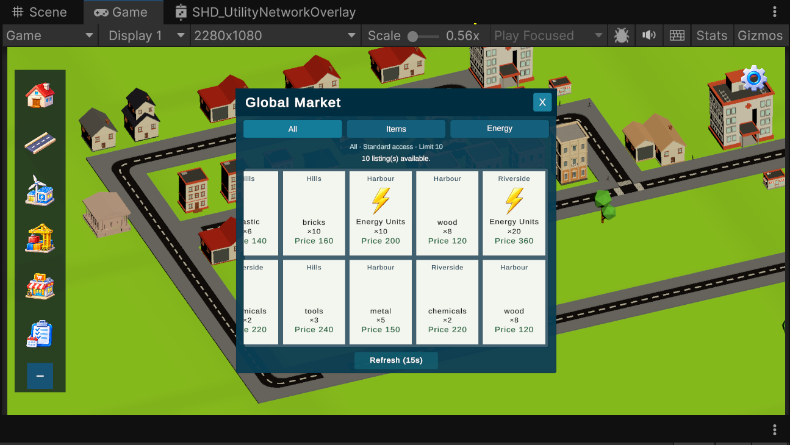
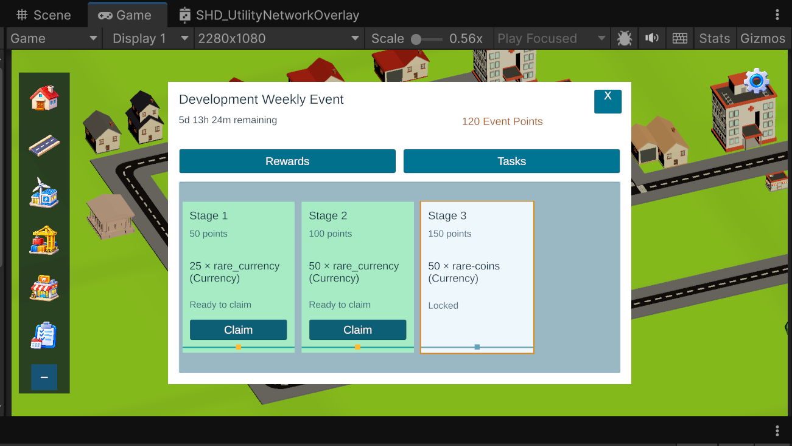
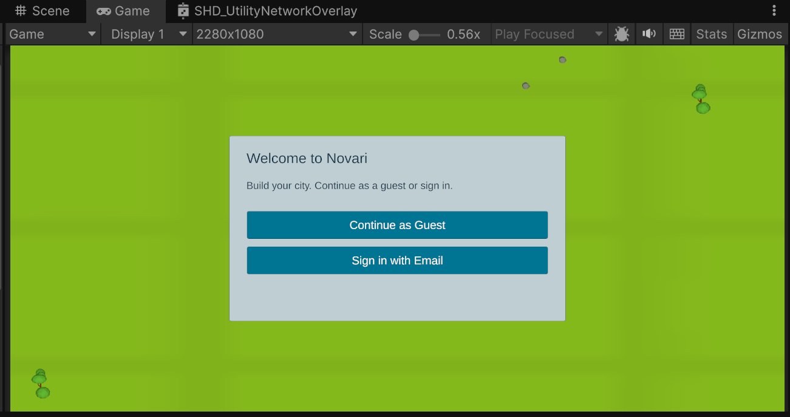
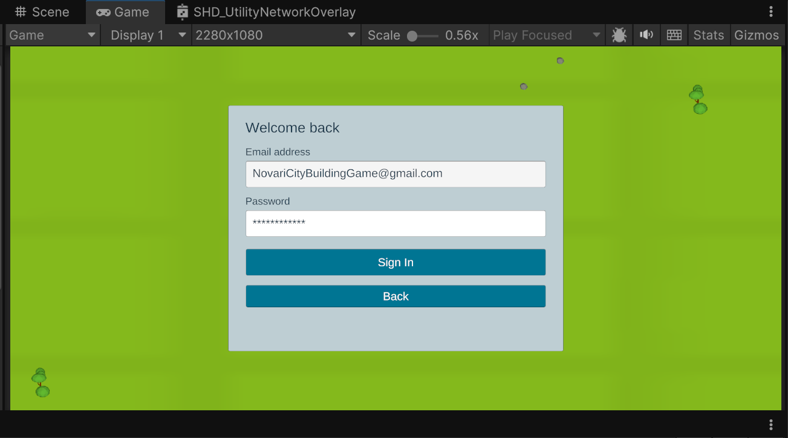

City placement and controls
Building and road placement, preview controls, a building catalogue, and touch controls for moving and zooming the camera.
Personal project · In development
A city-building game, built one system at a time.
I’m developing Novari for mobile using Unity and C#. Alongside the game, I’m building an ASP.NET Core backend for features including trading and weekly event rewards.
A short development recording showing the city and game menus.





1 of 5 · City and building catalogue
The game
Novari gives me a way to work on both an interactive game client and the services behind it. I’ve been developing the placement tools, city menus and camera controls, as well as backend features that store and validate player actions.
The game is still in development. Android builds are being distributed through Google Play internal testing while I check the controls and layouts on a real phone.
Current work
Building and road placement, preview controls, a building catalogue, and touch controls for moving and zooming the camera.
A market for browsing listings and visiting a seller’s depot. Backend work includes inventory checks, listing creation and protection against conflicting updates.
Tasks, event points and staged rewards, with backend validation for progress and reward claims.
Responsive menus, safe-area layouts and larger touch targets. Testing on a phone revealed controls that looked comfortable in the Editor but were too small in practice.
Behind the game
My professional background is in C#, ASP.NET and SQL Server. Novari lets me apply that experience to problems such as keeping inventory and trade listings consistent.
For example, creating a listing needs to reserve the player’s inventory and save the listing together. I use a database transaction for those changes, with integration tests for cases such as an occupied depot slot and inventory changing during a request.
Next
I’m continuing to refine the game, test the Android builds and improve how the features fit together. This page will grow with the project as I add more screenshots and gameplay recordings.
If you’d like to discuss the project or my development experience, I’m happy to talk.
Get in touch